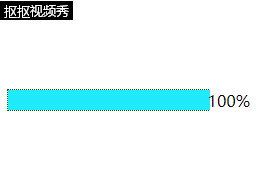

主要用到的 offsetWidth 属性，定时器。
1 <!DOCTYPE html>
2 <html>
3 <head>
4 <meta http-equiv="Content-Type" content="text/html; charset=utf-8" />
5 <title>进度条 </title>
6 </head>
7 <style>
8 #progress{
9 position: relative;
10 margin: auto;
11 top: 200px;
12 display: block;
13 width: 200px;
14 height: 20px;
15 border-style: dotted;
16 border-width: thin;
17 border-color: darkgreen;
18 }
19 #filldiv{
20 position:absolute;
21 top: 0px;
22 left: 0px;
23 width: 0px;
24 height: 20px;
25 background: blue;
26 }
27 #percent{
28 position: absolute;
29 top: 0px;
30 left: 200px;
31 }
32 </style>
33 <body>
34 <div id="progress">
35 <div id="filldiv"></div>
36 <span id="percent">0</span>
37 </div>
38 </body>
39 </html>
40 <script type="text/javascript">
41 //获取所有需要的元素
42 var progress = document.getElementById("progress");
43 var filldiv = document.getElementById("filldiv");
44 var percent = document.getElementById("percent");
45
46 var w = progress.clientWidth;//获取整个进度条的长度
47
48 //开启一个定时器
49 var timer = setInterval(function(){
50 //filldiv的宽度递增
51 //filldiv.offsetWidth，每一次获取的都是当前的宽
52 filldiv.style.width = filldiv.offsetWidth + 1 + "px";
53 //filldiv添加一个随机背景颜色
54 filldiv.style.background = getColor();
55 //percent统计百分比
56 percent.innerHTML = parseInt((filldiv.offsetWidth/w)*100) + "%";
57 //当filldiv的宽到了200的宽就停止定时器
58 if(filldiv.offsetWidth == w){
59 clearInterval(timer);//当进度达到100%时，关闭定时器，进度停止。
60 }
61 },10);
62
63 //获取十六进制的随机颜色值
64 function getColor(){
65 var str = "0123456789abcdef";
66 var color = "#";
67 var rand;
68 //str有下标 0-15
69 //获取0-15的随机数
70 //通过这个随机数作为str的下标，
71 //获取随机字符
72 //获取六个随机字符拼成一个字符串
73 for(var i = 0 ; i < 6 ;i++){
74 rand = getRand(0,15);
75 color += str.charAt(rand);
76 }
77 return color;
78 }
79
80 //获取min-max之间的随机整数
81 function getRand(min,max){
82 return parseInt(Math.random() * (max - min + 1) + min);
83 }
84
85 </script>
运行效果：

**可以将 getColor() 和 getRand() 函数放入一个公共的JS库，下次使用时可以直接调用。